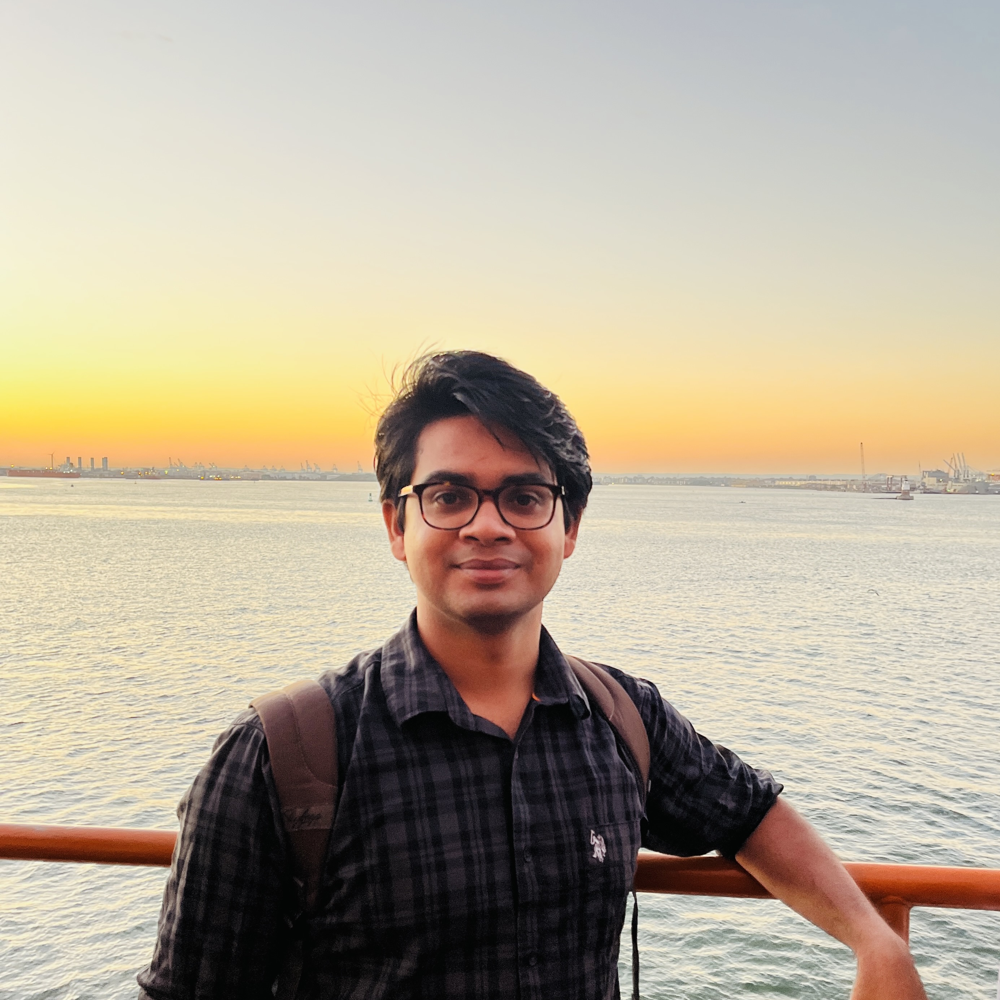

|
Naveen Reddy Dyava
I'm a Masters in Computer Science student at the Columbia University in the city of New York, specializing in Machine Learning.
I am looking for Summer 2024 Internships as well as full-time opportunities starting Jan 2025. Please reach out to me via email or LinkedIn if you think I am a good fit.
Email /
LinkedIn /
GitHub /
Photography
|

|
Education
Columbia University, New York, NY
Aug 2023 - Dec 2024 (expected)
Degree: Master of Science in Computer Science (Track: Machine Learning)
Coursework: Algorithms, Databases, Cloud Computing & Big Data, Reinforcement Learning, Computer Vision II, Advanced Topics in Deep Learning, Natural Language Processing, Projects in Computer Science
Indian Institute of Technology Madras (IIT Madras), Chennai, India
Aug 2017 - May 2022
Degree: Dual Degree - M.Tech. in Data Science & B.Tech. in Mechanical Engineering
Coursework: Programming in C, Deep Learning, Pattern Recognition & Machine Learning, Big Data Lab, Concepts in Statistical Learning Theory, Probability, Statistics & Stochastic Process, Differential Equations, Functions of Several Variables, Series & Matrices, Statistical Design & Analysis of Experiments, Mathematical Foundations of Data Science, Fundamentals of Operations Research, Principles of Economics, Microeconomics, Data Analytics, Data Analytics Lab
Final Year Thesis: Pattern Mining to Identify Front Runners in Securities Markets
|
Technical Skills
Programming Languages: C++, Python, SQL, MATLAB, JavaScript, HTML, LaTeX
Databases: MySQL, MongoDB, Neo4j, InfluxDB
Frameworks/Libraries: PyTorch, TensorFlow, Scikit-learn, Scipy, NumPy, Pandas, NLTK, OpenCV, Flask, Dask
Technologies: AWS, GCP, Kubernetes, Docker, Spark, Kafka, Git, OpenSearch, AWS DynamoDB, AWS Lex, AWS API Gateway
|
Professional Experience
American Express (Analyst, Full-Time)
Aug 2022 - Aug 2023
Location: Bengaluru, India
Siemens (Machine Learning Engineer, Internship)
Jun 2021 - Jul 2021
Siemens (Machine Learning Engineer, Internship)
Dec 2020 - Feb 2021
Vidyukta Technology Solutions Pvt. Ltd. (Software Engineer, Internship)
May 2020 - Jun 2020
|
Research Experience
Anomaly Detection at Traffic Intersections
May 2022 - Jul 2022
Researcher under Prof. Zoran Kostic at Columbia University.
Member of the COSMOS - Smart City Intersections (traffic) computer vision team.
https://cosmos-lab.org/experimentation/smart-city-intersections/
Multimodal Sentiment Classifier for YouTube Kids Toy Reviews
Organization: Indian School of Business
May 2022 - Jul 2022
Pattern Mining to Identify Front Runners in Securities Markets
Jun 2021 - May 2022
Final Year Thesis project at the Indian Institute of Technology Madras.
Semantic Segmentation of Fetuses from Ultrasound Scans
Nov 2019 - Jan 2020
Undergraduate Student Research project at the Indian Institute of Technology Madras.
Project Page
|
Projects
Instruction Guided Multimodal Information Retriever
Ongoing
Video Super-Resolution
Ongoing
Reinforcement Learning for Financial Portfolio Management
Ongoing
A Cloud-based Video Conferencing application
Sep 2023 - Dec 2023
Project Page
AI-based Smart Photo Album Web Application
Sep 2023 - Dec 2023
Project Page
Dining Concierge Chatbot
Sep 2023 - Dec 2023
Project Page
To-do List Web Application using Kubernetes
Sep 2023 - Dec 2023
|
|
{kind=link}